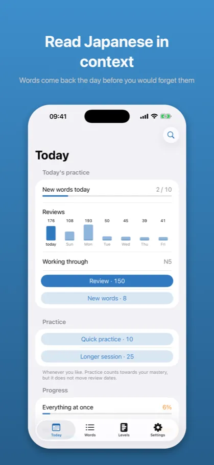
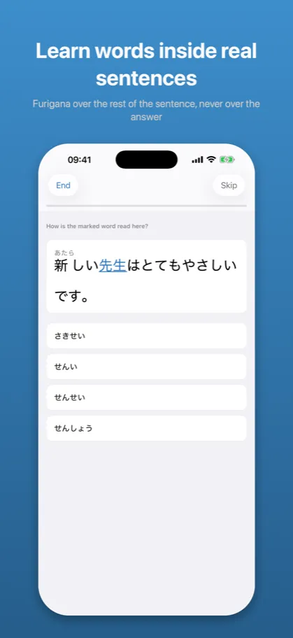
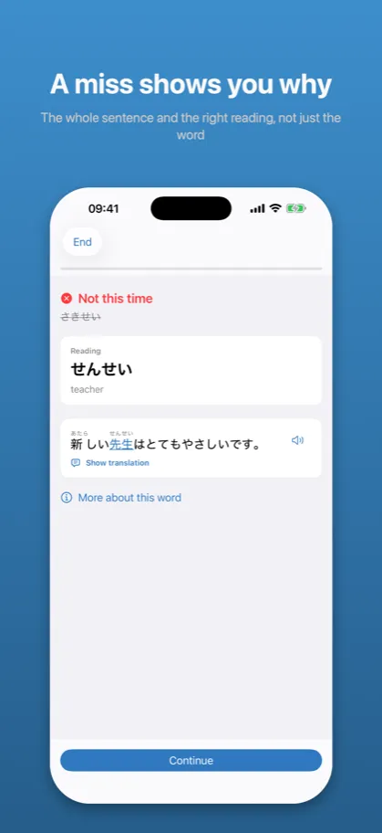

Bunmyaku: Japanese Reading文脈
Vocabulary, kanji, furigana
App Store →Free app with an in-app purchase
You know the kanji. You know the word. But can you read it when it turns up inside a sentence? That is a different memory – and this trains it.
What it looks like

Words come back the day before you would forget them

Furigana over the rest of the sentence, never over the answer

The whole sentence and the right reading, not just the word
Description from the store
You look up a word, you learn it, you tick it off. A week later it appears in a sentence and you stop dead.
That gap is what Bunmyaku trains. Not kanji in isolation, not a deck of flashcards – words in the place they actually occur. The whole JLPT range, N5 through N1.
READING AND MEANING ARE DIFFERENT MEMORIES
You can understand 改善 in every sentence you meet and still not be able to say かいぜん. Most apps average those into one number per word. This one keeps them apart:
改善 Meaning 91 %
Reading 54 %
After that you know what to open. After "改善 72 %" you know nothing.
FOUR WAYS TO BE ASKED
How a word is read here. What it means here. Type the reading from memory. Pick the written form from four that look and sound alike. Each measures something the others cannot, and you never know which is coming.
THE SENTENCE IS NOT DECORATION
Every word sits in an original sentence written for it. The context has to settle the reading and the sense – otherwise the question is not asked.
FURIGANA THAT DOES NOT GIVE THE ANSWER AWAY
Readings above kanji make a sentence approachable instead of a wall. But the reading you are being asked about is always hidden – even with furigana switched on. The setting says what you want to see; the question says what it is not allowed to show.
WRONG ANSWERS THAT TEACH
The wrong options are not random kana. They are the mistakes people actually make: the reading without the sound change, the long vowel dropped, the small っ missing, or another reading the kanji really has.
HONEST ABOUT WHAT IS UNCERTAIN
Some words genuinely have two readings. 家 is いえ and うち; 明日 is あした and あす. Those are never turned into a four-button question, because an option holding correct Japanese marked wrong teaches an untruth whichever one you pick. They are shown side by side instead.
REVIEWS THAT ROTATE THE SENTENCE
What comes back on a schedule is the word and the skill – not the flashcard. When 経験 is due, a different sentence is chosen from its pool. Otherwise you recognize the card by its first three characters and stop reading.
CONJUGATED WORDS, NOT JUST DICTIONARY FORMS
読んでいた in a sentence is linked to 読む. Bunmyaku does not teach conjugation, but it does not pretend words only appear in their dictionary shape.
ENGLISH AND POLISH
Interface and content switch independently.
YOUR OWN WORDS, FROM WHAT YOU READ
Save a sentence from a manga or a textbook – typed in, or scanned from a photo the phone reads by itself. The model pulls out the words worth keeping, adds their readings, and lets them into your reviews.
An extra layer, entirely optional: without it the rest of the app counts progress and due dates the same, and every call is on your explicit request.
PRIVACY
No account, no analytics, no ads. Study, review and scanning work offline, and your progress stays on your phone.
The network is used only by AI analysis, and only when you invoke it: the sentence you caught, or a catalog word, goes to the server – not your study history, nothing about you, and never a photo.
FREE AND PAID
N5 is free in full – every word, all four question types, reviews, progress and the backup file, plus a few AI analysis calls a month.
Levels N4, N3, N2 and N1 are bought one at a time, in bundles, or all at once – once, no account, no expiry; each brings cross-level practice with it. Anyone who bought Premium earlier gets N2 and N1 at no extra cost.
AI analysis is a separate subscription, because it is the only part that costs something each time it is used: PLN 14.99 monthly or PLN 119.99 yearly, auto-renewing, cancellable in your Apple ID settings. It does not cover JLPT levels.
Also from the same author: Kaname – Japanese Grammar, Katsuyokei – Conjugation, Joshi – Japanese Particles, and Kazoekata – Japanese Counters.
TERMS
Terms of Use (EULA): https://www.apple.com/legal/internet-services/itunes/dev/stdeula/
Privacy Policy: https://jakub-dwojak-aseity.github.io/app-policies/bunmyaku/1.2/en/privacy.html
The description above is the same text that stands on the App Store product page – it comes from the same file.
Common questions
What does Bunmyaku teach?
You look up a word, you learn it, you tick it off. A week later it appears in a sentence and you stop dead.
That gap is what Bunmyaku trains. Not kanji in isolation, not a deck of flashcards – words in the place they actually occur. The whole JLPT range, N5 through N1.
What does Bunmyaku cost?
N5 is free in full – every word, all four question types, reviews, progress and the backup file, plus a few AI analysis calls a month.
Levels N4, N3, N2 and N1 are bought one at a time, in bundles, or all at once – once, no account, no expiry; each brings cross-level practice with it. Anyone who bought Premium earlier gets N2 and N1 at no extra cost.
Does it work without an account or a network?
No account, no analytics, no ads. Study, review and scanning work offline, and your progress stays on your phone.
The network is used only by AI analysis, and only when you invoke it: the sentence you caught, or a catalog word, goes to the server – not your study history, nothing about you, and never a photo.
What languages does it support?
Interface and content switch independently.
Documents
The other apps
- Kaname: Japanese Grammar — JLPT practice: N5 N4 N3 N2 N1
- Katsuyokei: Conjugation — Verbs, adjectives and drills
- Joshi: Japanese Particles — Grammar drills for the JLPT
- Kazoekata: Japanese Counters — Counting, kanji and drills
- Kuzushi: Casual Japanese — Anime, drama and slang
- Shindan: Japanese Level Test — JLPT placement: N5 N4 N3 N2 N1
- Keigo: Polite Japanese — Formal Japanese for work
- Kifuku: Japanese Pitch Accent — Pronunciation and listening
- Onomatope: Japanese Mimetics — Manga and anime vocabulary